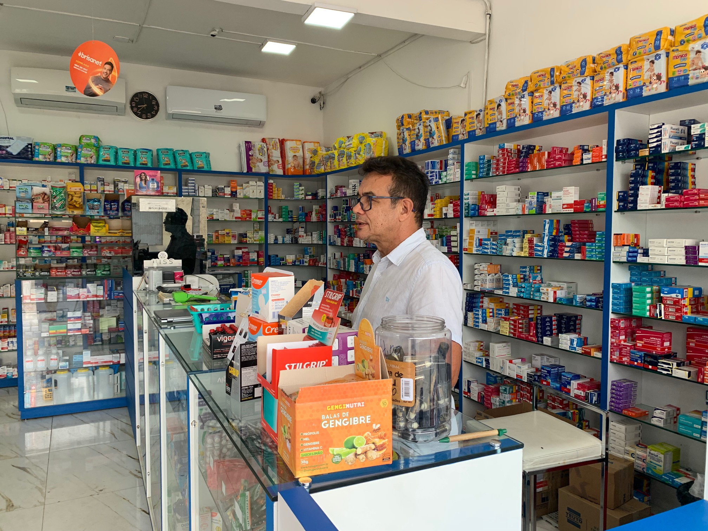

A Drogaria Nossa Senhora do Perpétuo Socorro faz farte da história das famílias pauferrenses e da região oeste potiguar
Desde 1996, a Drogaria Nossa Senhora do Perpétuo Socorro tem sido mais do que uma simples farmácia em
Pau dos Ferros. Fundada com dedicação pelos visionários empreendedores Páscoa Gluvênia de Souza e Luiz
Antonio de Araújo, esta farmácia não é apenas um estabelecimento comercial, mas sim um guardião da saúde
da nossa comunidade.

Há mais de duas décadas, a Drogaria Nossa Senhora do Perpétuo Socorro tem desempenhado um papel crucial na promoção do bem-estar e na garantia de cuidados de saúde acessíveis aos pauferrenses. A sua presença constante e compromisso com a qualidade tornaram-na um pilar confiável no coração da cidade.
Desde a sua inauguração, a missão da Drogaria Nossa Senhora do Perpétuo Socorro tem sido proporcionar não apenas medicamentos, mas também orientação e apoio a todos que buscam cuidados de saúde. A equipe dedicada e qualificada está sempre pronta para oferecer assistência, conselhos e um sorriso acolhedor, tornando cada visita uma experiência além das expectativas.
Ao longo dos anos, a Drogaria Nossa Senhora do Perpétuo Socorro tem acompanhado as mudanças no cenário da saúde, investindo em tecnologia, inovação e ampliando seu portfólio de serviços. Desde a venda de medicamentos até serviços de saúde preventiva, a farmácia tem evoluído para atender às crescentes necessidades da comunidade.
A Drogaria Nossa Senhora do Perpétuo Socorro continua a ser um farol de cuidados de saúde, proporcionando confiança e tranquilidade aos pauferrenses. Aqui, não apenas vendemos medicamentos, construímos laços de confiança que perduram por gerações.
Visite-nos e experimente a diferença que uma farmácia comprometida com a saúde pode fazer. Juntos, continuamos a escrever a história da Drogaria Nossa Senhora do Perpétuo Socorro, um capítulo de cuidado, compromisso e prosperidade para a nossa amada Pau dos Ferros!